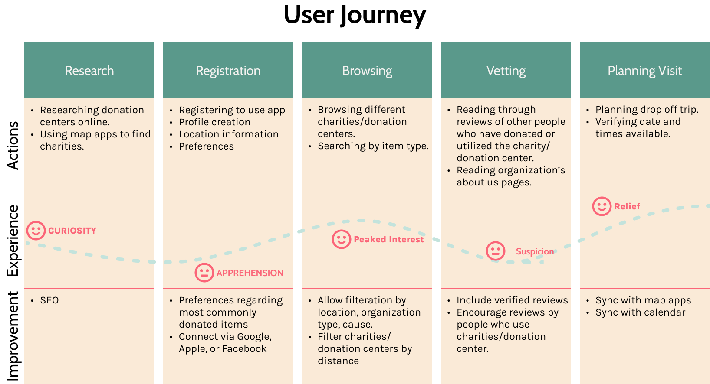
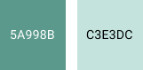
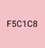
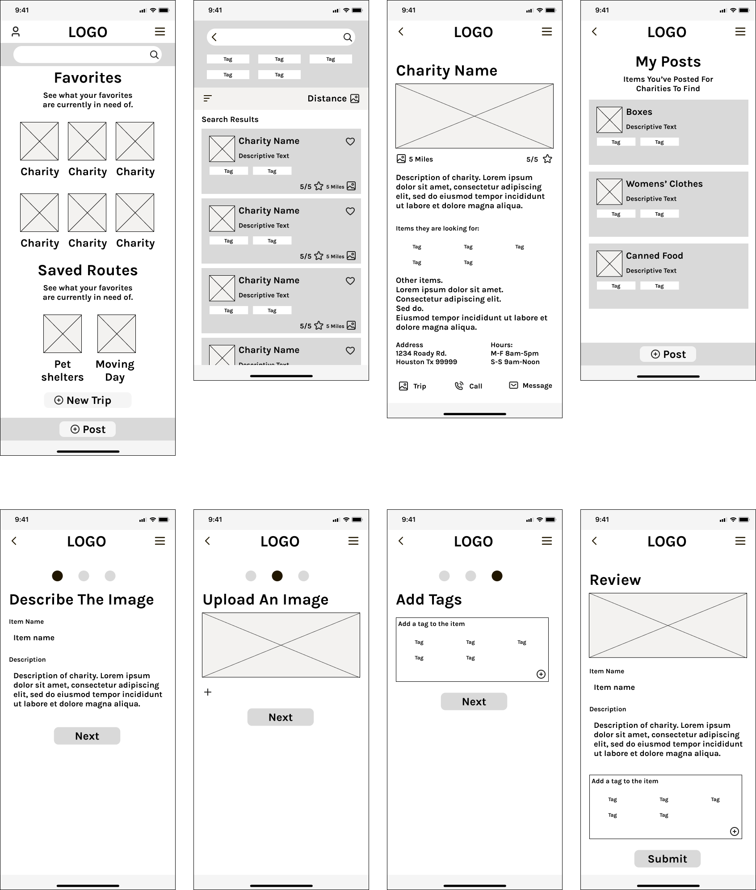
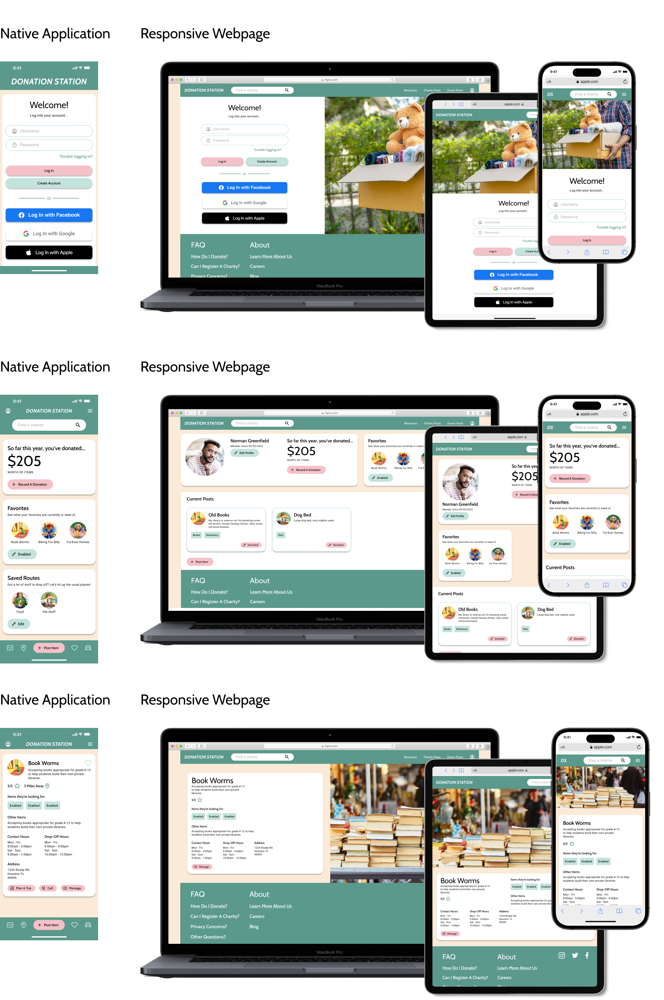
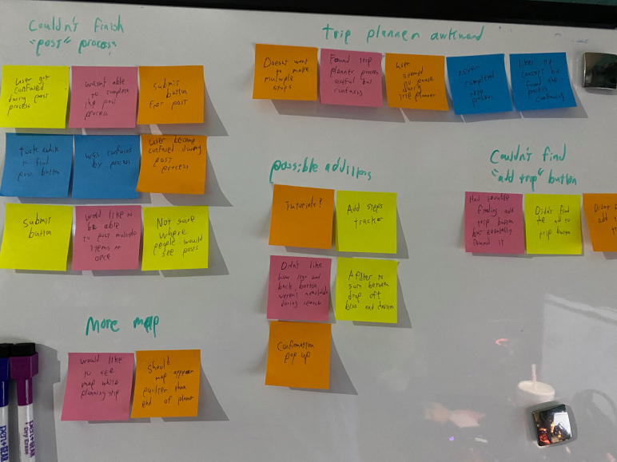

UX Case Study For
Donation Station
A native application with matching responsive webpage that helps donors find charities in need of the items they are donating.
ROLE: UX Research, UX Design, and Visual Design
RESPONSIBILITIES: This was a solo project, and as such, I was responsible for all elements of the case study. This included user interviews, conducting a competitive analysis, creating personas and user journeys, prototyping, conducting usability studies, and more.
DURATION: 6 Weeks
TOOLS: Figma, Adobe Illustrator, Google Sheets, Google Docs
Design Process
To create a user focused application...
The Design Thinking process to empathize with our users and iterate designs until their needs were met.
Empathize
- User Interviews
- Pain Points
- Competitive Analysis
Define
- Problem Statement
- Empathy Maps
- Personas
- User Journey
Ideate
- Brainstorming
- Userflows
- Information Architecture
Prototype
- Lo-Fi Mockups
- Lo-Fi Wireframes
- Hi-Fi Wireframes
- Prototyping
Test
- Usability Studies
Empathize Phase
Research & Interview Insights
User Research
We sent questionnaires to potential users from a wide range of demographics, and asked them the following questions relating to their donation habits:
- How often do you donate items (such as clothes, food, furniture, or household items) to charities?
- How often is this triggered by you wanting to give something away vs. hearing that a charity needs something?
- For the former, how do you usually go about deciding who or where to donate the item?
- What are some frustrations you have with donations processes that you have gone through in the past?
- What are your main motivators for donating items?
Using the answers from the questionnaires, we created empathy maps summing up what the users said, their thoughts on donation in general, the actions they took, and their feelings about donations. Using these empathy maps, we were able to glean pain points outs related to donation items as well as group similar themes together into personas.
Pain Points
Trust
Almost all the respondants conveyed a feeling of mistrust towards general donation drop-off centers. Concerns focused on how these centers were handling donations, how much they were repricing items for, and how much of the money actually went to a cause.
Where to go?
Many of the participants stated that they often found it difficult finding charities that actually needed the items they were donating. They often donate items in bulk at very busy times (moving day or spring cleaning), and usually end up giving up and donating everything to a general drop-off location that they don't trust.
Paperwork
While not an immediate pain point, some participants pointed out that it can be frustrating during tax season when they can't find receipts for what they donated or were unable to keep track of their donations.
Empathy Maps
Summing up what questionnaire participants said, thought, did, and felt

Define Phase
Situation & Goals
Problem Statement
Users need an easy way find and vet a charity, so that they can easily donate items they no longer needs and at the same time make sure they go to someone who needs them.
Proposed Solution
The proposed application would not only help users find charities seeking particular items for donation, but the app would also allow them to rate the charity as well.
Personas
Let's Meet Our Users!
User Journey
The Emotional Roller Coaster!
Prototype & Design Phase
Branding & Typography
Color choices
Greens
Many users stated that one of their motivators to donate was that they didn't want to throw out items on a whim and help reduce the amount of trash going into landfills. As the primary color associated with nature and recycling, green seemed an obvious choice. Added benefits included its symbolism with piety and sincerity, aleviating the hesitation of many users who may not yet trust the charities.
Pink
The color pink was chosen as an accent color for the CTA's because it stood out from the other colors, was complimentary, and because the color itself embodies the essence of love, hope, and optimism that non-profits often represent.
TypeFace
Cabin
Used for headers and titles, chosen for professional and classic appearance.
Roboto
Used for copy text, chosen for ease of reading.
Lo-Fi Wireframes
Rough Outlines Of Screen Layouts
The image below shows low fidelity wireframes for the Donation Station app. Since each charity and post would contain a great deal of information, cards were used to organize each item. A tag system was also developed to help make searching for charities easier.
Before moving onto the High Fidelity Mockups, a usability study was conducted to see what improvements or changes needed to be made. Some of the screens above were the results of changes made after the usability studies. To skip to the usability study, please click the button below.
Hi-Fi Mockups
A polished preview
Below you can see a couple examples of the High-Fidelity Mockups that were created after insights from the first usability were synthethized. Here you can see both the layout for the Native Application and how it would be converted to a responsive webpage.
Test Phase
Usability Study
Results From Lo-Fi Usability Study
Research Questions
Attempt to post an item for donation. These posts will appear on searches made by charity accounts.
Were you able to complete the process? Describe your overall experience during this process, were there any hiccups along the way? If so, please explain.
Please demonstrate how you might use this app to search for a charity that you could donate particular items to. Does this process seem intuitive? What would you like to see improved?
Let’s say you’re moving and have a lot of items to give away. This may mean making multiple stops. Try out our trip planner. Does it seem to work the way you would expect such a tool to work?
Do you think this tool would be useful?
Participants
5 participants from various demographics.
Methodology
Users were asked to perform tasks in a low-fidelity prototype
15 Minutes
United Sates, Remote
5 Unmoderated Usability Studies
Identifying Themes
Critiques for your consideration
Once the usability studies had been conducted, the notes from each study were transferred to post it notes and organized into categories. Though these categories themselves do not constitute themes, themes can be gleamed from them. For instance, the categories of 'confused with adopt CTA', 'clarification regarding process', and 'didn't know what to do next' categories together indicate a theme. That theme could be called, 'adoption process'
Insights
But what does it mean?!
Once themes have been identified, they need to be turned into insights. In the previous example, we found the theme 'adoption process'. What does that mean? Since many of the participants needed clarification on the adoption process, it can be infered that the current layout may lead to customers calling the shelter instead of using the built in system. Working off of this insight, we can rework the user flow to be more intuitive.
Priority 1
Since none of the participants were able to complete the ‘post a donation’ process, the process needs to be made clearer. Some of the suggestions included a clearly labeled submit button, as well as a process tracker. This improvement should help to increase the task success rate.
Priority 2
Since 80% of users became lost during the trip planner process, and 60% of them couldn’t find the ‘add to trip’ button, the process needs to be simplified to clear up the confusion. Some possible improvements might include making it easier to find the ‘add to trip’ button, and allowing users to use the map from the beginning. These improvements should help to decrease time-on-task.
Priority 3
Since 40% of users mentioned that it would be helpful to know where they are in certain processes, the processes need to be outlined to make the steps and goals clearer. Some suggestions included adding process trackers, confirmation pop-ups, and tutorials. These improvements should help to reduce user error rates.
Misc.
Additional Considerations
Considering All Possibilities
Accessibility Considerations
WCAG 2.1 Color Contrast: The colors chosen were matched with either black or white text and made sure to adhere with WCAG guidelines, the minimum minimum contrast ratio for large-scale text is 3:1 and 4.5:1 for body text. This is to ensure that any users who may have difficulty discerning differences in low contrast colors can still use the application.
Considerations were also made when labelling the headers in the code of the application, in order to ensure that screen readers could navigate the application easily.
All imagery and iconography is to include alt text to ensure accessability for users using screen readers.